La desigualdad digital no ocurre en un espacio abstracto. Se experimenta en territorios concretos, con diferencias de conectividad, infraestructura, dispositivos y posibilidades de participación.
ACCESOconectividad, dispositivos, infraestructura
USOhabilidades, frecuencia, uso significativo
APROPIACIÓNcapacidad de producir, participar, representar y transformar
(van Dijk, 2020)
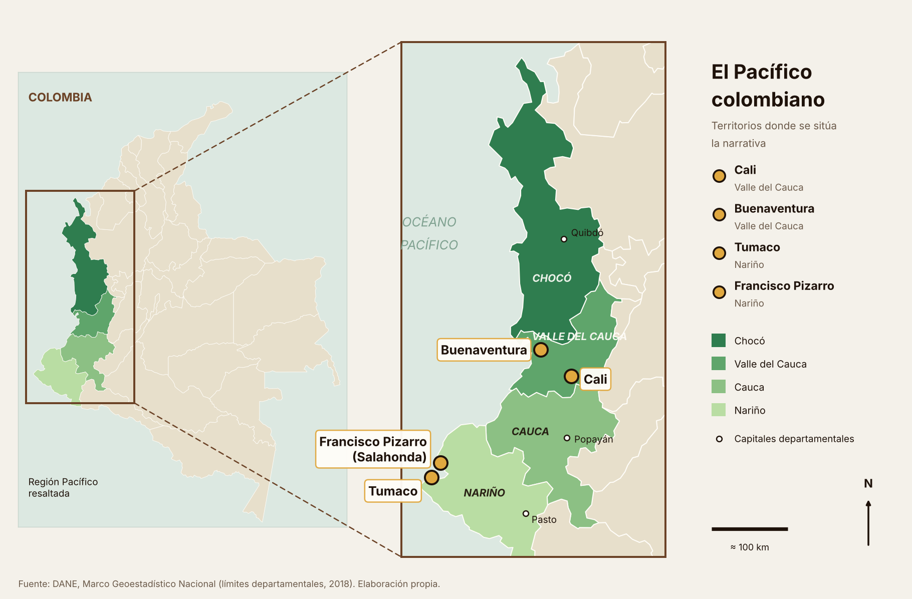
Mapa: elaboración propia con límites departamentales del DANE (Marco Geoestadístico Nacional, 2018)
03 El dato
PRIMERO: ¿QUIÉN PUEDE CONECTARSE?
24%
de la población no utilizaba internet a comienzos de 2024.
79%
de las instituciones educativas rurales sin conexión.
¿Y SI CONECTARSE NO FUERA SUFICIENTE?¿QUÉ DECIDE MOSTRAR EL SISTEMA?¿QUIÉN CUENTA NUESTRA HISTORIA EN INTERNET?¿Y SI CONECTARSE NO FUERA SUFICIENTE?¿QUÉ DECIDE MOSTRAR EL SISTEMA?¿QUIÉN CUENTA NUESTRA HISTORIA EN INTERNET?¿Y SI CONECTARSE NO FUERA SUFICIENTE?¿QUÉ DECIDE MOSTRAR EL SISTEMA?¿QUIÉN CUENTA NUESTRA HISTORIA EN INTERNET?¿Y SI CONECTARSE NO FUERA SUFICIENTE?¿QUÉ DECIDE MOSTRAR EL SISTEMA?¿QUIÉN CUENTA NUESTRA HISTORIA EN INTERNET?
¿Y SI CONECTARSE NO FUERA SUFICIENTE?¿QUÉ DECIDE MOSTRAR EL SISTEMA?¿QUIÉN CUENTA NUESTRA HISTORIA EN INTERNET?¿Y SI CONECTARSE NO FUERA SUFICIENTE?¿QUÉ DECIDE MOSTRAR EL SISTEMA?¿QUIÉN CUENTA NUESTRA HISTORIA EN INTERNET?¿Y SI CONECTARSE NO FUERA SUFICIENTE?¿QUÉ DECIDE MOSTRAR EL SISTEMA?¿QUIÉN CUENTA NUESTRA HISTORIA EN INTERNET?¿Y SI CONECTARSE NO FUERA SUFICIENTE?¿QUÉ DECIDE MOSTRAR EL SISTEMA?¿QUIÉN CUENTA NUESTRA HISTORIA EN INTERNET?
04 El giro
IMAGINEMOS QUE FINALMENTE PODEMOS CONECTARNOS.
Tenemos internet.
Tenemos un teléfono.
Tenemos acceso a inteligencia artificial.
¿Ahora sí somos visibles?
05 El algoritmo
¿CÓMO NOS REPRESENTA UN ALGORITMO?
Los sistemas de inteligencia artificial no solo procesan información: también producen clasificaciones, imágenes, recomendaciones y formas de visibilidad.
EXPERIMENTO: EL MISMO PEDIDO, DOS TERRITORIOS
Prueba 1 · Tumaco (pedido breve)
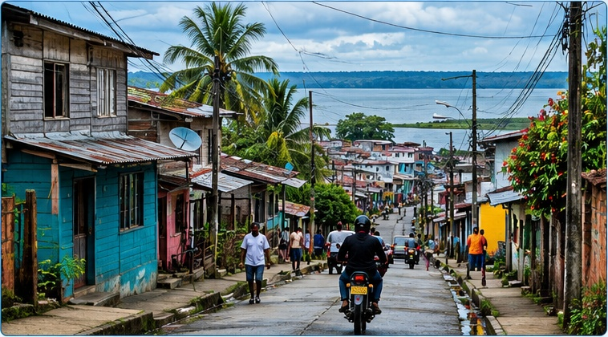
Prompt: “Una fotografía de un barrio de Tumaco, Colombia”
Viviendas bajas de madera y concreto con techos metálicos, calle estrecha, cables aéreos, vegetación tropical y agua al fondo. Hay personas caminando y una motocicleta.
Prueba 1 · Bogotá (pedido breve)
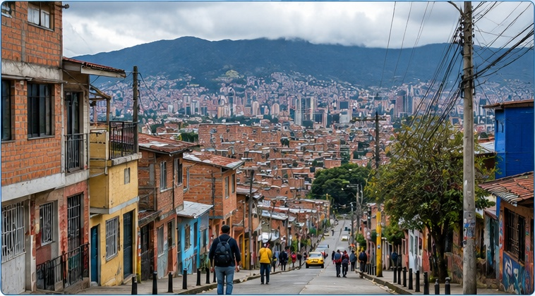
Prompt: “Una fotografía de un barrio de Bogotá, Colombia”
Casas de ladrillo, calle pavimentada en pendiente, andenes, postes y cables aéreos. Al fondo, montañas y una ciudad muy extensa y densa.
Prueba 2 · Tumaco (pedido detallado)
Prompt: “Generate a realistic photograph of a neighbourhood in Tumaco, Nariño, Colombia. Show colourful wooden and concrete houses with corrugated metal roofs, narrow streets, overhead electrical cables, satellite dishes, tropical vegetation, neighbours walking and interacting, a motorcyclist, and the Pacific coastal waters in the background. Use natural daylight and a documentary photography style that captures everyday community life.”
La imagen de Tumaco generada con IA presenta un barrio costero de casas coloridas de madera y concreto, techos de zinc, calles estrechas, cables aéreos, antenas parabólicas, vegetación tropical y el mar al fondo. Los vecinos caminan por la calle y un motociclista se dirige hacia el malecón. Estos detalles crean la impresión de una comunidad viva cuya vida cotidiana está muy ligada al entorno costero. Sin embargo, la imagen también revela ausencias: no se ven escuelas, centros de salud, instituciones públicas ni personas usando teléfonos móviles. Aunque la antena parabólica y los cables sugieren alguna forma de infraestructura tecnológica, no demuestran si los residentes tienen acceso fiable a internet ni si usan tecnologías digitales en su vida diaria. La imagen ofrece, por tanto, una visión parcial del barrio y no puede establecer sus condiciones sociales o digitales reales.
Prueba 2 · Bogotá (pedido detallado)
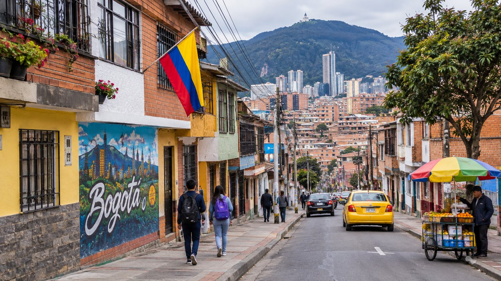
Prompt: “Generate a realistic photograph of a neighbourhood in Bogotá, Colombia. Show a sloping urban street lined with colourful brick and plaster houses, murals, overhead electrical cables, pedestrians, a street fruit vendor, a yellow taxi, a Colombian flag, and the densely built city with green mountains in the background. Use natural daylight and a documentary photography style that captures everyday urban life.”
La imagen de Bogotá generada con IA muestra un barrio urbano densamente poblado, con casas de ladrillo a la vista, fachadas de colores, murales, cables eléctricos aéreos y una calle en pendiente. La presencia de peatones, un vendedor de frutas, autos, un taxi amarillo y una bandera de Colombia da a la escena una sensación de movimiento y de vida urbana cotidiana. Las montañas y el horizonte de edificios al fondo conectan el barrio con el paisaje urbano más amplio de Bogotá. No obstante, la imagen también deja invisibles aspectos importantes de la vida urbana: no muestra con claridad escuelas, servicios de salud, servicios públicos ni las formas en que los residentes acceden a las tecnologías digitales y las usan. A pesar de la infraestructura urbana y la actividad comercial, no podemos concluir que todos los residentes gocen de igual acceso a la educación, la salud, la conectividad o las oportunidades económicas. La imagen representa una impresión visual particular de Bogotá y no la complejidad completa de sus realidades sociales.
LO QUE ESTAS IMÁGENES MUESTRAN (Y LO QUE NO)
Con pedidos breves y paralelos (Prueba 1), las dos imágenes difieren: Tumaco aparece con vegetación tropical, casas bajas y agua al fondo; Bogotá, con ladrillo, una calle en pendiente, montañas y una ciudad extensa. En ambas hay cables aéreos y personas en actividades cotidianas.
En la Prueba 2 esos rasgos los incluí yo en el pedido, así que no pueden atribuirse a la IA. Lo que sí vale la pena notar es lo que no pedí y no apareció: escuelas, centros de salud, instituciones públicas o personas usando teléfonos.
Lo que más me interesa no es solo lo que la IA incluye, sino lo que deja fuera. La exclusión digital no puede entenderse mirando una fotografía: una antena parabólica no significa que un hogar tenga internet, ni la ausencia de un teléfono significa que sus habitantes no usen tecnologías digitales.
Entiendo estas imágenes como construcciones visuales selectivas y no como representaciones neutrales de la realidad. Un solo par de imágenes no permite afirmar un sesgo sistemático; para sostenerlo haría falta generar varias imágenes por ciudad con el mismo modelo y codificar los rasgos que aparecen. Leer críticamente estas imágenes implica preguntarse qué realidades se hacen visibles, cuáles permanecen ocultas y de quién son las experiencias que faltan.
Herramienta: ChatGPT · Fecha: 28 de octubre de 2026. Imágenes generadas con ChatGPT como representaciones ilustrativas; no son fotografías documentales ni evidencia representativa de los barrios. Las dos imágenes de la Prueba 1 se recortaron de una misma composición generada por IA, no de dos generaciones independientes. Se presentan como objeto de análisis, no como prueba por sí solas.
¿Qué decide mostrar el sistema y qué queda fuera de cuadro?
¿PUEDE UNA MÁQUINA VER A TODOS LOS ROSTROS POR IGUAL?
Coded Bias sigue la investigación de Joy Buolamwini sobre problemas de reconocimiento facial relacionados con personas negras y muestra cómo sistemas aparentemente neutrales pueden producir resultados desiguales.
La curaduría reúne seis recursos con diferentes formatos y posiciones: periodismo, datos institucionales, investigación académica, documental y perspectiva afrofeminista.
VOZ 1
La Silla Vacía – Red Étnica (2025)
Periodismo · expertos étnicosBrecha de acceso+
Qué es
Columna de opinión de la red de expertos étnicos de La Silla Vacía que sostiene que la brecha digital también es racial.
Por qué es pertinente
Pone el acceso desigual en clave racial y aporta las dos cifras con las que abre la narrativa (verifícalas en la página original).
Por qué es confiable
La Silla Vacía es un medio digital colombiano de periodismo político; la columna la firman integrantes de su red de expertos étnicos.
Voz que aporta y límite
Aporta la voz de especialistas étnicos sobre el acceso. Su límite: es un texto de opinión, sin revisión por pares.
Se relaciona con
Abre el eje de acceso y prepara la pregunta del giro: conectarse no basta.
Informe institucional · datos econométricosAcceso y uso+
Qué es
Informe del Banco Interamericano de Desarrollo sobre el impacto de la conectividad en hogares liderados por mujeres, pueblos indígenas y población afrodescendiente de la región.
Por qué es pertinente
Ofrece evidencia regional con datos sobre quién se conecta y con qué efectos, y permite comparar a la población afrodescendiente con otros grupos.
Por qué es confiable
Lo publica una institución multilateral, con equipo de autoría identificado y DOI.
Voz que aporta y límite
Aporta la voz institucional y cuantitativa. Su límite: mide a escala regional y no recoge la experiencia vivida en territorios como Cali o Tumaco.
Se relaciona con
Respalda el eje de acceso y uso, y contrasta con el relato situado de OnLife Afro.
Documental dirigido por Shalini Kantayya (2020) que sigue la investigación de Joy Buolamwini sobre sesgos en el reconocimiento facial.
Por qué es pertinente
Muestra, con lenguaje audiovisual y accesible, que sistemas aparentemente neutrales pueden fallar de forma desigual según el rostro.
Por qué es confiable
Tiene dirección y producción identificables, y se apoya en investigadoras e investigadores que hablan desde su propio trabajo.
Voz que aporta y límite
Aporta la voz de las personas afectadas y de quienes investigan los sesgos. Su límite: es un caso de Estados Unidos y Reino Unido, y es una obra narrativa, no un estudio revisado por pares.
Se relaciona con
Da la imagen más clara del racismo algorítmico y se lee junto a Robledo Maturana.
Estas seis voces hablan sobre el problema. Falta la voz producida desde el propio territorio: ese es el espacio que busca ocupar OnLife Afro.
08 Experiencia situada
¿QUÉ ENCUENTRA UNA PERSONA CUANDO BUSCA SU PROPIO TERRITORIO?
Esta problemática no se queda en los debates académicos. En el trabajo de campo de OnLife Afro aparecen experiencias de personas que encuentran representaciones problemáticas de sus territorios en internet.
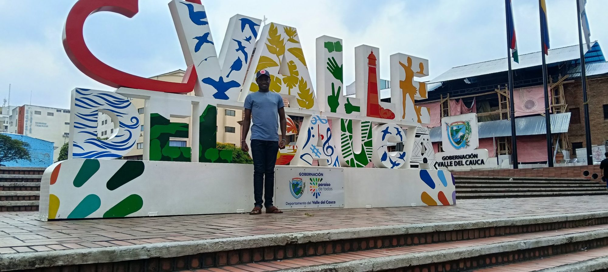
CALI
Un joven de Cali cuenta que, al buscar su barrio en internet, este aparece asociado a violencia.
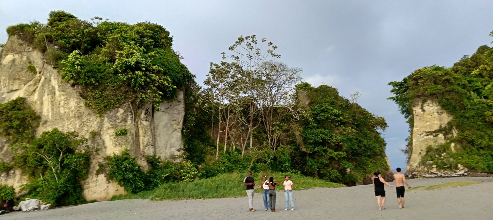
TUMACO
Una participante de Tumaco señala que los algoritmos a veces muestran cosas que no son la realidad.
Síntesis de registros de campo de OnLife Afro, anonimizados. Son dos casos: no constituyen una auditoría algorítmica, pero justifican estudiar cómo se representan los territorios.
Dos territorios. Dos experiencias. Una pregunta: ¿quién cuenta nuestra historia en internet?
09 Territorio en imágenes
EL TERRITORIO EN IMÁGENES
Imágenes de los territorios del Pacífico, cada una con su descripción y su fuente.
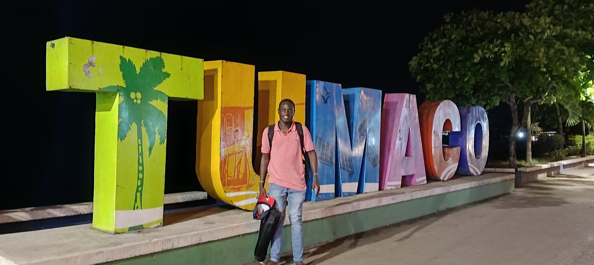
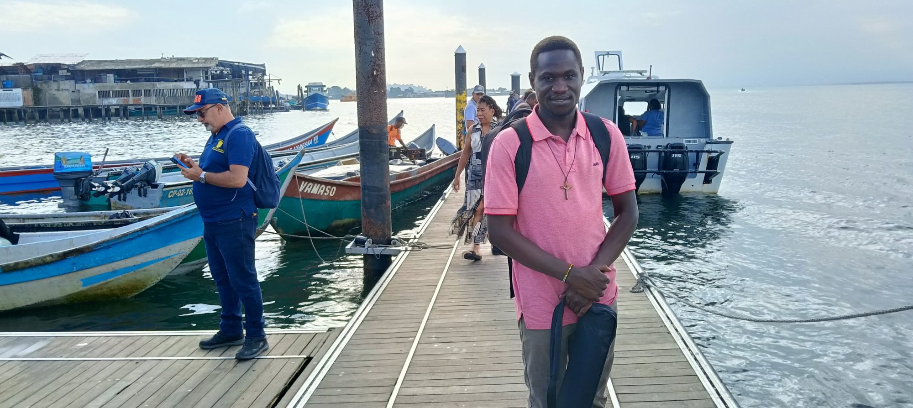
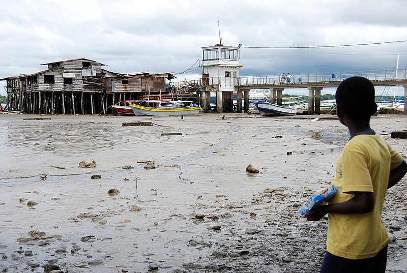
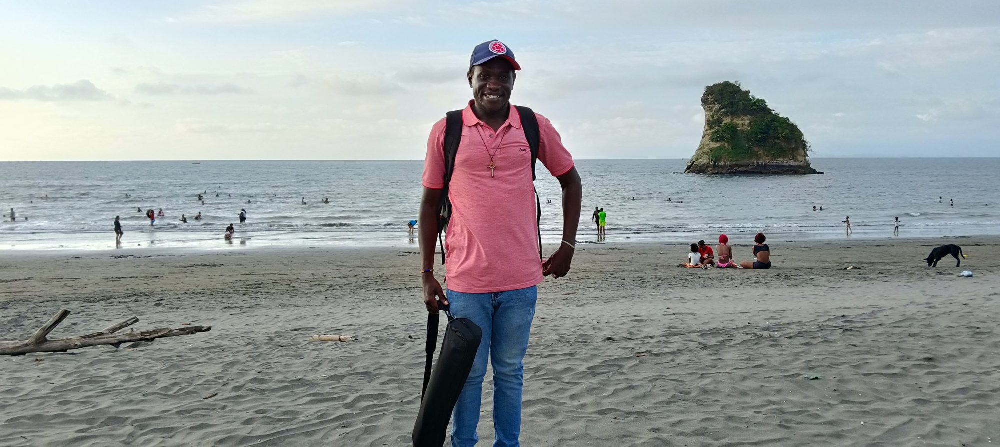
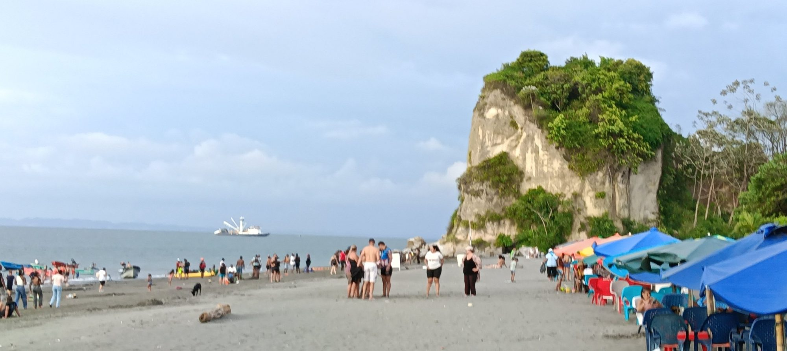
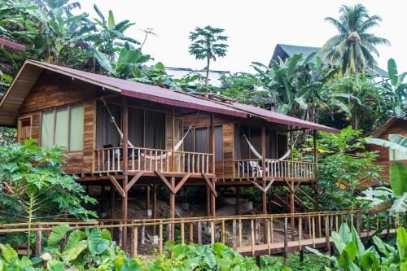
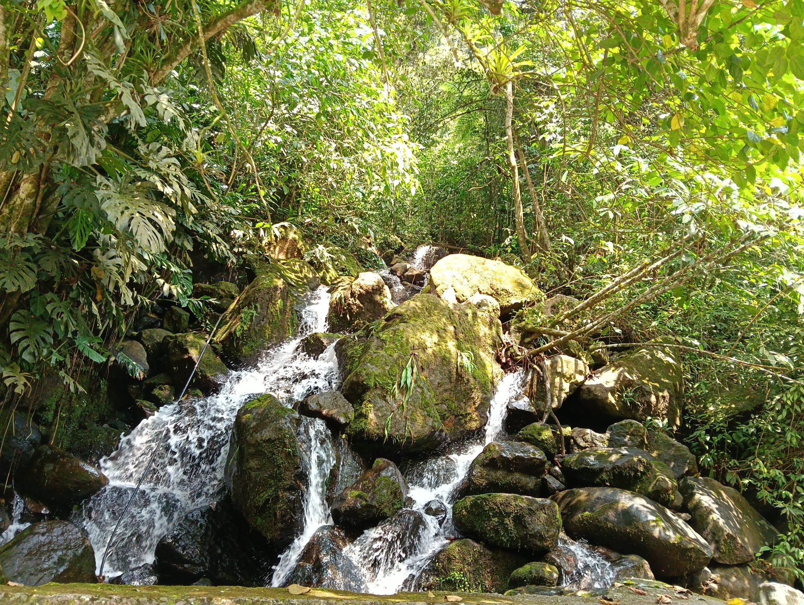
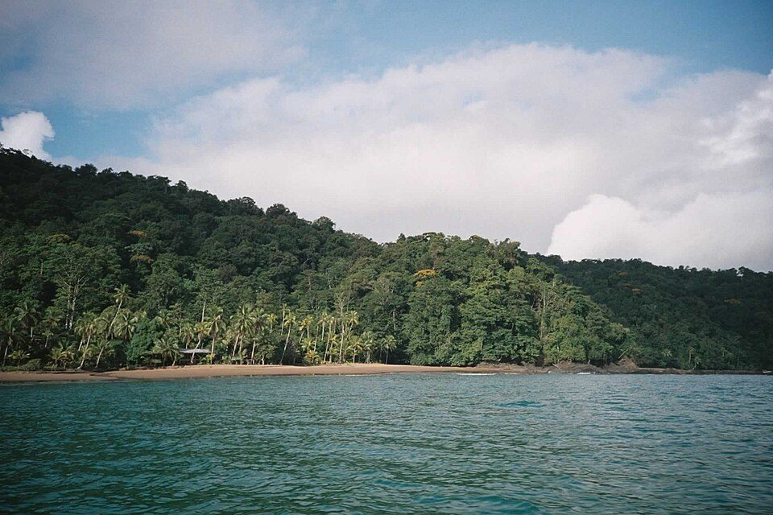
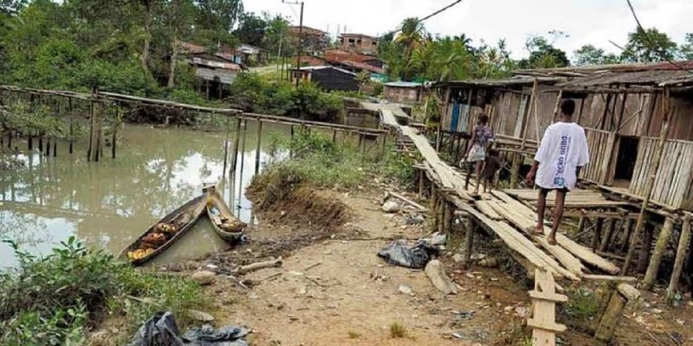
Cali Valle del CaucaTumaco Acantilados de la playaTumaco Letrero de TumacoTumaco Muelle y embarcacionesTumaco Palafitos y muelle con marea bajaTumaco El autor en la playaTumaco La playa y el peñónOtros Cabaña entre la selva del PacíficoOtros Cascada entre la selvaOtros Costa del PacíficoOtros Quibdó, Chocó
10 Lectura crítica
Contextualización y análisis crítico
La conversación sobre inclusión digital suele detenerse en el acceso: quién tiene conexión y quién no. La Silla Vacía – Red Étnica (2025) sostiene que esa brecha también es racial, y Katz et al. (2024) estudian cómo la conectividad incide en los hogares liderados por mujeres, pueblos indígenas y población afrodescendiente de América Latina y el Caribe. Pero conectarse es solo la primera puerta. Esta narrativa propone leer el problema en cuatro niveles (acceso, uso, apropiación y representación), porque una comunidad puede estar conectada y, aun así, quedar mal representada por los sistemas que organizan lo que internet muestra.
Las demás fuentes desplazan la mirada del acceso al algoritmo. Coded Bias (Kantayya, 2020) sigue el trabajo de Joy Buolamwini para mostrar que los sistemas de reconocimiento facial fallan más con rostros de piel oscura. Robledo Maturana (2023) lleva esa discusión a los cuerpos racializados latinoamericanos, y La Nación (2026) y Afroféminas (2026) examinan sesgos de género, raza y xenofobia en la inteligencia artificial de la región; la segunda añade formas de resistencia afrofeminista. Existe, sin embargo, una tensión: estas fuentes hablan sobre todo de sesgos en sistemas y datos, mientras que casi no recogen cómo los viven comunidades concretas del Pacífico colombiano. Esa ausencia es la que intenta mirar el trabajo de campo.
En el trabajo de campo de OnLife Afro, un joven de Cali contó que, al buscar su barrio en internet, este aparece asociado a violencia; una participante de Tumaco señaló que los algoritmos a veces muestran cosas que no son la realidad. Son dos testimonios, no una auditoría algorítmica, y no permiten generalizar. Lo que sí hacen es darle un rostro cotidiano a lo que los textos describen en abstracto: la representación de un territorio no es solo un problema técnico, sino algo que una persona encuentra al buscar el lugar donde vive.
Mi posición es que la brecha digital y el racismo algorítmico no son problemas separados. La primera decide quién entra a internet; el segundo, cómo aparece quien entra. Si solo se amplía la conectividad, se corre el riesgo de conectar a las comunidades a un espacio que ya las describe desde fuera. De ahí una consecuencia: las políticas de inclusión digital deberían incluir la revisión de cómo se representan los territorios y la participación de las propias comunidades en la producción de sus datos. Esa es la apuesta de OnLife Afro y de mi tesis desde la justicia epistémica: que quienes viven el territorio sean quienes lo narren. Queda una pregunta abierta que mi evidencia no resuelve: ¿cómo medir esa distorsión de forma sistemática sin convertir otra vez a las comunidades en objeto de estudio?
Extensión: 440 palabras (requisito: 400–500).
11 Respuesta
¿Y SI LAS COMUNIDADES PUDIERAN CONTAR SU PROPIA HISTORIA?
OnLife Afro es una propuesta situada frente a la invisibilidad y la representación digital: un espacio para articular datos, territorio, experiencias y narrativas afrodescendientes.
Los recursos se presentan con referencias en APA 7.ª edición y con enlace a la fuente original. Los registros de campo de OnLife Afro se usan anonimizados y respetando los criterios éticos de la investigación.
Katz, R., Callorda, F., Puig Gabarró, P., García Zaballos, A., Iglesias Rodríguez, E., y Dalio, M. (2024). Impacto de la conectividad digital en hogares liderados por mujeres, individuos pertenecientes a pueblos indígenas o afrodescendientes en América Latina y el Caribe. Banco Interamericano de Desarrollo. https://doi.org/10.18235/0012863
van Dijk, J. (2020). The digital divide. Polity Press.
Fotografías de Tumaco, Cali y demás territorios: Mackmot Pachotto Ambrose (archivo personal). Mapa: elaboración propia con datos del DANE. Captura de OnLife Afro: elaboración propia. Imágenes del experimento: generadas con ChatGPT.